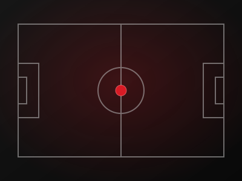
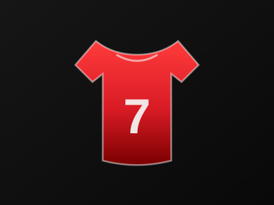
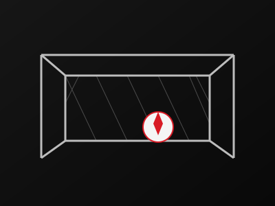
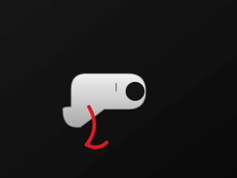
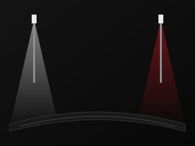
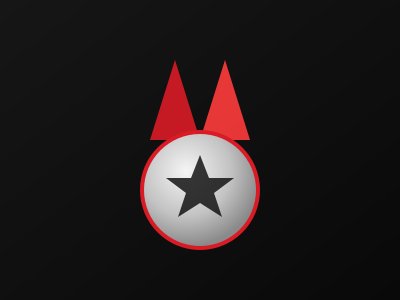

Crónicas, fichajes, cantera, arbitraje y las historias que se juegan cada fin de semana en las canchas de Bogotá.

Cómo Pantera FS rompió el bloque defensivo de Halcones sobre la bocina para llevarse el título.
Ver más →El extremo llega procedente de Fénix FS con opción de renovación por dos temporadas.
Ver más →
Ocho juveniles de la Copa Sub-17 que ya suenan para dar el salto a Primera.
Ver más →La comisión arbitral ajusta el protocolo de tarjetas acumuladas para la fase final.
Ver más →
Dani "Muro" Vega repasa su temporada como mejor portero de la Copa Metropolitana.
Ver más →
Triplete de Leo "Zurdo" Paz en una noche redonda para el conjunto de El Salitre.
Ver más →
Doce cupos disponibles para equipos libres mixtos, con arranque en octubre.
Ver más →
La historia de Mateo Silva, revelación del torneo, contada por sus propios vecinos.
Ver más →El pívot artillero asegura su continuidad tras ser clave en la fase de grupos.
Ver más →